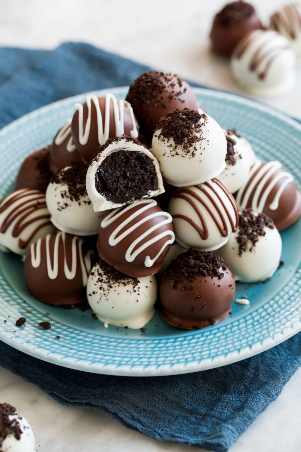

Oreo Truffles

Description
Oreo Balls AKA Oreo Truffles are the perfect treat for any occasion! They only require three ingredients, they couldn't be easier to make and they taste unbelievably delicious. They're always the first thing to go at parties and I'm yet to meet someone who doesn't love them!
Ingredients
- Oreos
- Cream cheese
- Chocolate melts
Steps
- Prepare a baking sheet: Line an 18 by 13-inch baking sheet with wax paper or parchment paper.
- Crush Oreos: Place 36 Oreos in a food processor and pulse too fine crumbs. Alternatively this can be done by hand placing Oreos in a gallon size resealable bag and crushing to fine crumbs.
- Mix Oreos with cream cheese: add cream cheese to food processor, pulse in bursts until mixture is combined.
- Shape mixture into balls: Scoop mixture out about 1 Tbsp at a time and form into 1 inch balls then align on prepared cookie sheet.
- Chill: Place truffles in freezer for 15 minutes. Meanwhile crush remaining 3 Oreos.
- Melt Chocolate: Melt almond bark or chocolate according to directions on package
- Dip truffles: Remove truffles from freezer and dip in melted chocolate and use a spoon to pour some chocolate over the top then lift and allow excess chocolate to run off.
- Let set: Return to baking sheet, immediately sprinkle tops with crushed Oreos if desired, then allow chocolate to set. Alternatively, you can drizzle with melted chocolate for a nice finishing touch.